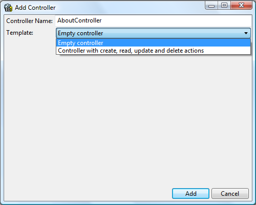

One of the new features in SharpDevelop 4.2 is better support for ASP.NET MVC 3 applications. Previous versions contained project templates for ASP.NET MVC but not much more. With SharpDevelop 4.2 the following features have been added:
Now let us take at these new features.
Before using SharpDevelop you should install ASP.NET MVC 3 and IIS, either IIS Express or full IIS. You can get MVC 3 and IIS Express from Microsoft's Web Platform installer or download them directly from the following pages:
After installing IIS Express make sure that you run IISExpress.exe once so it can generate its configuration files for your user profile. If you do not then SharpDevelop will fail to configure IIS Express.
Now we shall create a new C# ASP.NET MVC application that uses the Razor view engine. First run SharpDevelop and then from the File menu select New Solution to open the New Project dialog.
On the left in Categories select ASP.NET MVC under C#. On the right you will see three project templates.
Select the Razor MVC Application project template. Enter a name for the project and select a location where the project will be created. Click Create to create the MVC project.
If you open the Projects window by selecting Projects from the View menu you will see that the project template created a Home Controller, two Razor view pages - Index and Contact, as well as installing the jQuery and Modernizer NuGet packages.
If you open the a Razor file (.cshtml) you will see that there is html folding and Razor syntax highlighting.
The Razor syntax highlighting is still under development and does not work in all cases since it is not using Microsoft's Razor parser and uses a basic syntax definition file. In the screenshot above, for example, the Razor @ symbol is not correctly highlighted in the script and link tags.
In order to be able to run your application first you will need to configure the project to use IIS Express or IIS. From the Project menu select Project Options. Select the Debug tab. At the bottom of this tab you will see options for IIS Express and IIS.
For this walkthrough we will use IIS Express. Select IIS Express and enter a port number. Then click the Create Applicaton/Virtual Directory button. A message will then be displayed telling you that the application/virtual directory was created successfully. Now we can run the application.
To run the application select Run from the Debug menu. IIS Express will then be launched and your application will be loaded into your default web browser.

You can set breakpoints in your application and debug your code in the standard way. For example, set a breakpoint in the HomeController's Contact method and then click Contacts in your browser and you will see SharpDevelop stop at the breakpoint.
To stop debugging select Stop process from the Debug menu. You will then see a prompt asking you to detach or terminate the process being debugged, in this case IIS Express. Detaching will leave IIS Express running.
SharpDevelop includes a set of file templates for ASP.NET MVC applications. You can create a new file using these templates by selecting the project or a folder in the Projects window, right clicking and select Add New Item.
Select the appropriate template, give the file a name and click Create to add a new file to your project.
You can add a new controller to your project using a file template as described in the previous section or you can use the Add Controller dialog.
Select the Controllers folder in the Projects window, right click and select Add Controller to show the Add Controller dialog.

In the dialog you specify the controller's name and select one of the templates that will be used to generate the controller class. These templates are defined by a single T4 template that you can edit if you want to customise it. The T4 template exists in the following subfolder where SharpDevelop was installed:
AddIns\BackendBindings\AspNet.Mvc\ItemTemplates
Click the Add button to create a new controller from the T4 template.
A new view can be created by using a file template or by using the Add View dialog. Select one of the Views folders, right click and select Add New View to show the Add View dialog.

In the dialog you can specify the following items:
Views generated from this dialog use T4 templates which exist in the following folder if you need to customise them:
AddIns\BackendBindings\AspNet.Mvc\ItemTemplates
That concludes the walkthrough of the new ASP.NET MVC 3 support in SharpDevelop. Further information on ASP.NET MVC 3 can be found at the Getting Started with ASP.NET MVC page.